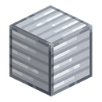
Металеві блоки
Усі варіанти
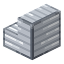
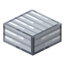
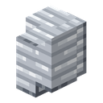
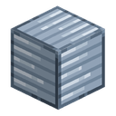
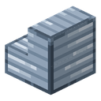
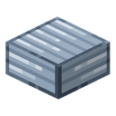
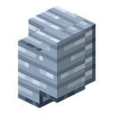
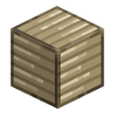
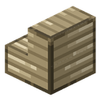
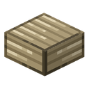
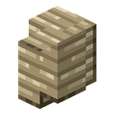
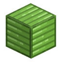
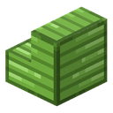
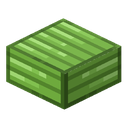
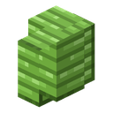
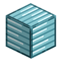
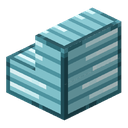
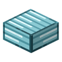
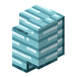
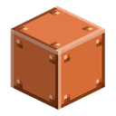
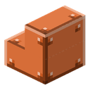
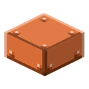
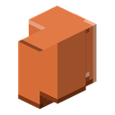
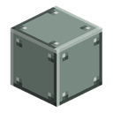
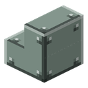
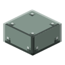
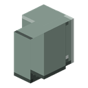
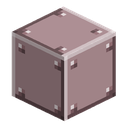
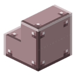
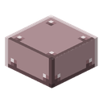
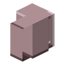
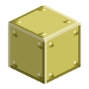
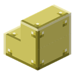
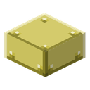
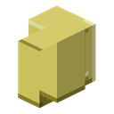
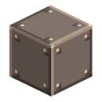
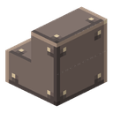
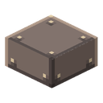
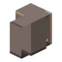
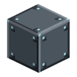
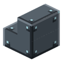
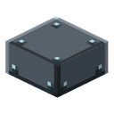
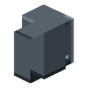
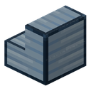
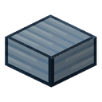
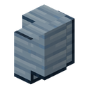
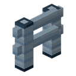
Зведення
Металеві блоки — сімейство будівельних блоків зі злитків мода. Кожен з одинадцяти злитків має свій блок зберігання: дев'ять злитків в одному повному кубі, а коли метал знову знадобиться — блок розбирається назад на дев'ять злитків без втрат. Так зберігаються сотні злитків і не займають пів скрині. Блок загартованого заліза був у моді й раніше (окрема сторінка) і належить до цього ж сімейства.
З кожного з дванадцяти блоків робляться сходи, плита і стіна — як з ванільного каменю чи міді. Із загартованого заліза є ще й паркан.
| Метал | Блок | Форми |
|---|---|---|
| Олово, срібло, нікель, уран, паладій | блок зберігання | сходи, плита, стіна |
| Бронза, інвар, купронікель, електрум, незеритовий сплав, екранувальний сплав | блок зберігання | сходи, плита, стіна |
| Загартоване залізо | блок зберігання (уже був) | сходи, плита, стіна, паркан |
Міні-приклад: після кількох годин у шахті в скрині три стоси олов'яних злитків. Збираєте їх у блоки — три стоси перетворюються на двадцять з гаком блоків в одному слоті. Зайві блоки йдуть на сходи й плити для даху майстерні.
Блоки й форми не дають енергії і ні з чим не працюють — це сховище металу і будівельний матеріал. Виняток — уран: уран у блоці лишається ураном і фонить (див. нижче).
Властивості блоку
| Поле | Значення |
|---|---|
| Форма | блок — повний куб 16³; сходи, плита, стіна і паркан — ванільні форми зі своїми колізіями (плита — половина блоку, стіна і паркан з'єднуються із сусідами) |
| Міцність / вибухостійкість | 5 / 6 — як у блоку заліза; у незеритового сплаву 50 / 1200 — як у блоку незериту |
| Інструмент | кайло; без потрібного кайла нічого не випадає |
| Дроп | сам блок; подвійна плита скидає дві плити |
| Звук | металевий; у незеритового сплаву — як у блоку незериту |
| Основа маяка | усі дванадцять блоків зберігання; форми — ні |
Яке кайло потрібне — як у ванільних металів: звичайні метали — як блок заліза, дорогоцінні та рідкісні як блоки золота й діаманта, незеритовий сплав — як блок незериту.
| Кайло | Метали |
|---|---|
| кам'яне або краще | олово, нікель, бронза, інвар, купронікель, загартоване залізо (і паркан) |
| залізне або краще | срібло, уран, паладій, електрум, екранувальний сплав |
| діамантове або краще | незеритовий сплав |
Блок, сходи, плита і стіна з незеритового сплаву у вигляді предмета не горять у лаві, як незеритові предмети.
Сходи ставляться кутами, як ванільні; стіни з'єднуються одна з одною і з ванільними стінами. Паркан із загартованого заліза з'єднується з іншими парканами і з парканом із незерської цегли, але не з дерев'яними — так само, як паркан із незерської цегли у ванілі.
Текстура кожного блоку намальована кольорами його злитка: у чистих металів — малюнок блоку загартованого заліза, у сплавів — пластина з фаскою і чотирма заклепками. Форми використовують текстуру свого блоку.
Радіація урану
Уран, зібраний у блок, не стає безпечним:
- В інвентарі блок урану, сходи з урану і стіна з урану опромінюють як дев'ять уранових злитків, плита з урану — як п'ять (половина блоку з округленням угору).
- Поставлений у світ блок урану опромінює гравця поруч, і його чує лічильник Гейгера. Одинарна плита рахується як п'ять злитків, подвійна — як блок.
- Усі поставлені уранові блоки навколо гравця рахуються одним джерелом у їхньому центрі, і це джерело не сильніше за одну скриню з ураном. Уранова стіна небезпечна, якщо стояти поруч, але не вбиває з іншого кінця кімнати.
Захист — той самий, що й від злитків: екрануючий костюм і відстань.
Рецепти
Блок зберігання (верстак): вісім злитків металу по колу і злиток мода в центрі → 1 блок. Вісім злитків по колу можуть бути й з іншого мода — підходить будь-який злиток того самого металу (наприклад, олово з іншого мода теж збирається в наш блок). Центральний злиток завжди наш: так два моди з однаковим блоком олова не сперечаються за один і той самий рецепт.
Назад у злитки (верстак, безформний): 1 блок → 9 злитків мода. Розбирається лише блок цього мода.
Блок загартованого заліза збирається по-старому — з дев'яти своїх злитків (спільного тегу для загартованого заліза немає в жодному іншому моді, сперечатися нема з ким).
Форми — як у ванільних кам'яних блоків, на верстаку або на каменерізі:
| Форма | Верстак | Каменеріз (з 1 блоку) |
|---|---|---|
| Сходи | 6 блоків → 4 | 1 |
| Плита | 3 блоки → 6 | 2 |
| Стіна | 6 блоків → 6 | 1 |
Каменеріз вигідніший для сходів: із шести блоків він дає шість сходів, а верстак — чотири.
Паркан із загартованого заліза (верстак): у кожному з двох рядів — загартоване залізо, пластина із загартованого заліза, загартоване залізо → 6 парканів.
Форми й паркан назад у блоки та злитки не розбираються — метал, що пішов у будівлю, лишається в ній.
Прогресія
Поза енергосистемою і прогресією мода. Блок з'являється разом зі злитком: щойно у вас є дев'ять злитків олова, срібла чи сплаву, можна зібрати блок. Злитки — на сторінках матеріалів: олово, срібло, нікель, уран, паладій, бронза, інвар, купронікель, електрум, незеритовий сплав, екранувальний сплав, загартоване залізо.
Пов'язане
- Блок загартованого заліза — перший блок сімейства, з окремою сторінкою.
- Срібна обшивка, Обшивка із загартованого заліза — декоративні блоки з пластин.
- Лічильник Гейгера — чує поставлений блок урану.